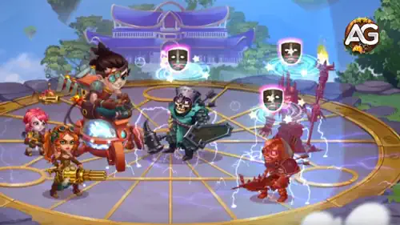
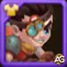
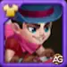
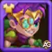

A verdadeira força de Isaac está em contra-atacar formações cheias de magos. Sua habilidade de silenciar inimigos,
aumentar o dano de seus aliados e resistir a ataques mágicos o torna indispensável em batalhas difÃceis, especialmente em Asgard.
Fórmula: (0,012% Vida + Nv * 0,05 + 10)% (Isaac), (0,003% Vida + Nv * 0,01 + 5)% (cada aliado).
Prioridade de Evolução:Alta – Uma habilidade de suporte crÃtica que alimenta diretamente a
habilidade principal de Isaac, tornando os silêncios muito mais frequentes. Sempre mantenha esta habilidade forte.
Após a segunda ativação de Tes’Lin em Sobrecarga, Isaac libera drones que aumentam o Ataque FÃsico de todos os aliados
por 8 segundos. Engenheiros recebem o dobro do bônus, tornando esta habilidade muito forte na equipe certa.

Habilidade - Módulo de Alta Voltagem, Hero Wars Dominion Era.
Melhor Patronagem para Isaac
Os mascotes de Isaac devem potencializar sua mecânica única baseada em Carga e sua sobrevivência. A patronagem correta pode aumentar o tempo de silêncio ou mantê-lo vivo tempo suficiente para neutralizar os magos inimigos.
Axel oferece proteção consistente ao dividir o dano recebido e evitar que Isaac seja derrotado em um único golpe. Isso o ajuda a sobreviver tempo suficiente para carregar Tes’Lin, mas diferente de Oliver e Mara, Axel não melhora as mecânicas únicas de Isaac nem a duração do silêncio. É uma escolha segura, mas secundária.
Melhor Skin para Isaac – Hero Wars: Dominion Era
As skins de Isaac devem ser priorizadas para maximizar seu papel anti-mago e seu dano fÃsico. Foque primeiro em penetração e ataque, deixando a sobrevivência para depois.

Skin Padrão
Atributos ganhos: Agilidade +1.365
- Ataque FÃsico da Agilidade: +4.095
- Armadura da Agilidade: +1.365
Prioridade de Evolução:3ª – Fornece uma mistura de Ataque FÃsico e Armadura, mas tem menos impacto no papel principal de Isaac em comparação com penetração ou ataque direto.
Total de Pedras de Skin de Agilidade para nÃvel máximo:
30.825

Skin de Máscara
Atributos ganhos: Ataque FÃsico +7.095
Prioridade de Evolução:2ª – Aumenta diretamente o dano total de Isaac e sua utilidade baseada em Carga, sendo uma forte escolha ofensiva após a penetração.
Total de Pedras de Skin de Agilidade para nÃvel máximo:
55.410
Skin Lunar
Atributos ganhos: Defesa Mágica +10.650
Prioridade de Evolução:4ª – Ajuda Isaac a resistir a dano mágico, mas seu silêncio já neutraliza magos de forma eficaz. Prioridade baixa, exceto em formações especÃficas de PvP.
Total de Pedras de Skin de Agilidade para nÃvel máximo:
55.410

Skin de Primavera
Atributos ganhos: Penetração de Armadura +10.650
Prioridade de Evolução:1ª – Essencial para ignorar a armadura inimiga e garantir que Isaac consiga causar dano consistente em magos e suportes da retaguarda. Melhor skin para investir primeiro.
Total de Pedras de Skin de Agilidade para nÃvel máximo:
55.410
Prioridade de Evolução dos Artefatos de Isaac – Hero Wars: Dominion Era
Os artefatos de Isaac devem ser evoluÃdos para maximizar sua utilidade contra magos e seu suporte à equipe. Foque primeiro em Penetração de Armadura e bônus de equipe antes de investir em atributos pessoais.
Artefato de Arma: Lil’ Tes’Lin
Atributos ganhos: Penetração de Armadura +50.190
Prioridade de Evolução:3º – Fornece crescimento individual de atributos para Isaac (ataque e armadura), mas tem menor prioridade em comparação com artefatos que fortalecem tanto Isaac quanto seus aliados.
Prioridade de Evolução dos Glifos de Isaac
Os glifos de Isaac devem focar primeiro em aumentar sua sobrevivência contra dano mágico e depois em maximizar seu dano fÃsico. Atributos defensivos são importantes, mas secundários, enquanto Agilidade oferece o menor benefÃcio no geral.
1º Glifo – Ataque FÃsico:
Atributos ganhos: +4.340
Prioridade de Evolução:Alta – Aumenta o dano geral de Isaac, fortalecendo suas habilidades Enxame de Drones e Módulo de Alta Voltagem. No entanto, fica um pouco atrás de Vida, já que a sobrevivência alimenta diretamente sua mecânica única de carga.
Prioridade de Evolução:Baixa – Fornece bônus tanto de dano quanto de defesa, mas os ganhos são bem menores em comparação com Vida e Ataque FÃsico direto. Evolua por último.
Por que Celeste countera Isaac: Sua habilidade Esfera Purificadora remove e bloqueia efeitos negativos nos aliados, tornando o silêncio de Isaac menos eficaz. Isso permite que sua equipe continue usando habilidades mesmo sob os efeitos de controle dele.
Heidi
Por que Heidi countera Isaac: Todas as habilidades de Heidi causam dano puro. Dano puro não gera cargas extras para o MP-300 Capacitor de Isaac, tornando Heidi extremamente eficaz em ignorar suas mecânicas únicas e ainda aplicar alta pressão.
BenefÃcio para Isaac e sua equipe: Faz com que o silêncio e a absorção de Isaac sejam ainda mais impactantes ao reduzir a eficácia dos magos, dando mais tempo para sua equipe dominar nas batalhas fÃsicas.
BenefÃcio para Isaac e sua equipe: Impede que os suportes inimigos revertam o dano fÃsico causado por sua equipe, tornando a interrupção anti-magia de Isaac ainda mais letal.
Melhores Times para Isaac - Hero Wars: Era do DomÃnio
Melhores Times de Defesa para Isaac
#
Tabela: Melhores Times de Defesa para Isaac
Aurora, Celeste, Isaac, Sebastian, Orion, Axel
Corvus, Dante, Isaac, Sebastian, Martha, Axel
Aurora, Dante, Isaac, Sebastian, Jet, Axel
Melhores Times de Ataque para Isaac
#
Tabela: Melhores Times de Ataque para Isaac
Axel, Orion, Sebastian, Isaac, Celeste, Aurora
Axel, Martha, Sebastian, Isaac, Dante, Corvus
Axel, Jet, Sebastian, Isaac, Dante, Aurora
Conclusão – Guia do Isaac no Hero Wars: Era do DomÃnio
Você gostou do nosso Guia do Isaac para Hero Wars Web e Facebok? Há algo que não entendeu ou gostaria de sugerir mudanças? Convidamos você a se juntar à nossa sessão de comentários na página do Alexandre Games Blog. Não hesite em expressar sua opinião, clarificar suas dúvidas e compartilhar sua sugestões. Clique no botão abaixo para começar:


 30.825
30.825